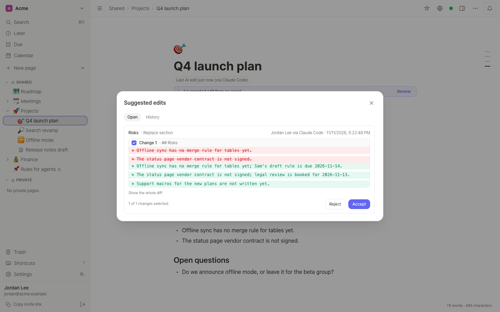
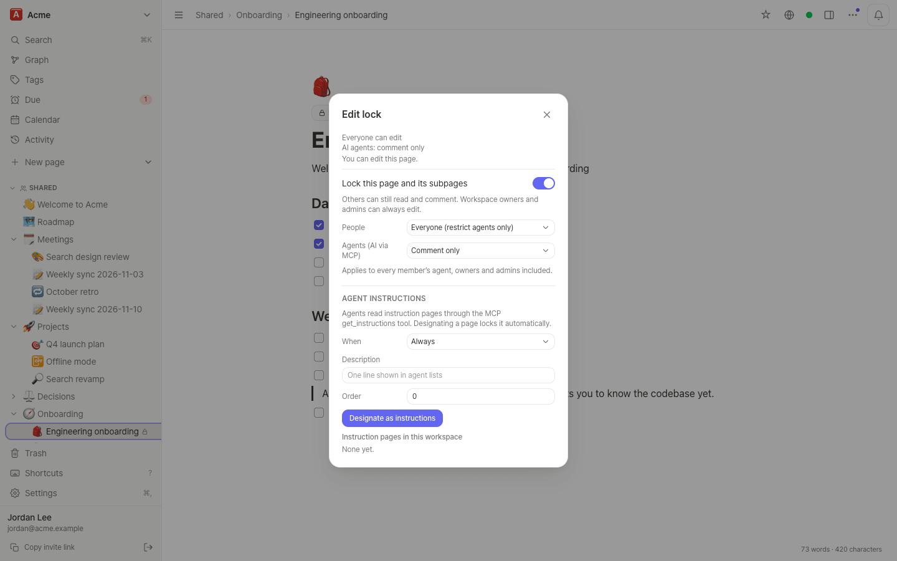
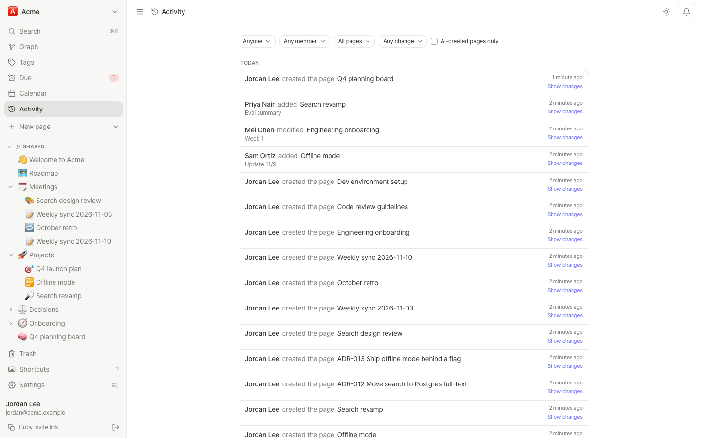
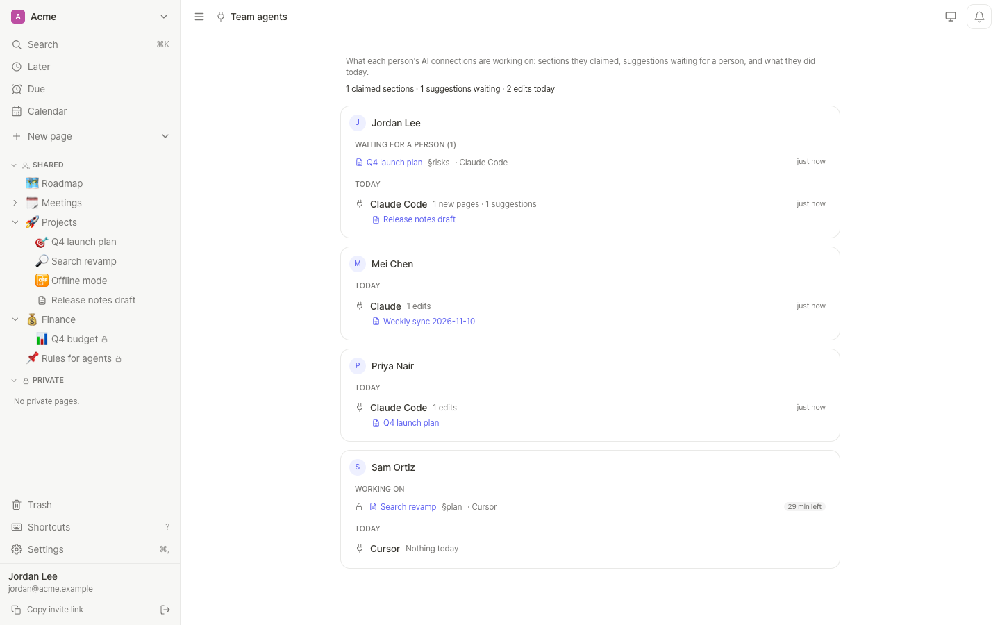
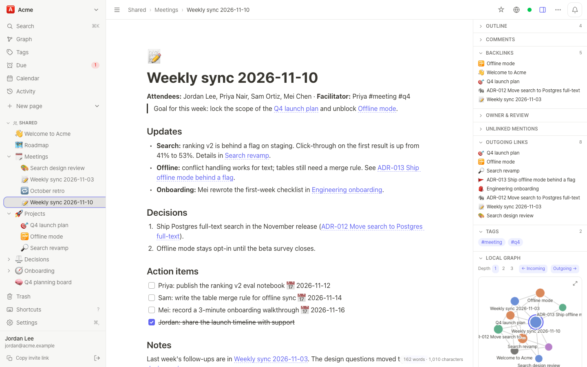
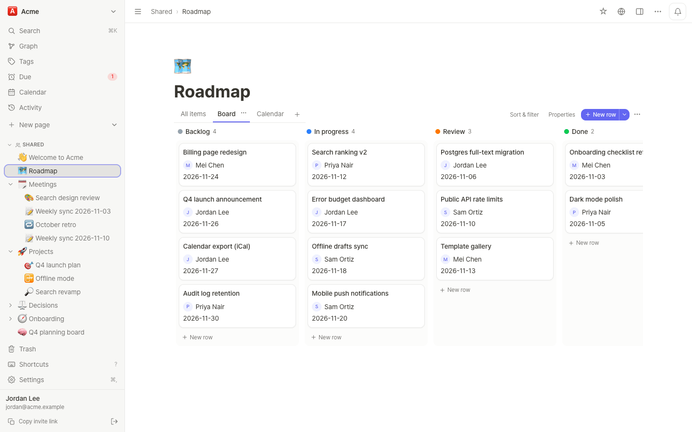

{{VERSION}} self-hosted
AI agents read and edit the notes your team writes
Inkling is a notes app that runs on your own server, with an MCP server built in. Each person connects their own agent. The agent finds the sections it needs within a token budget, changes one section against the version it read, and can leave its edits as suggestions for a person to accept.
For agents: summary for agents (llms.txt) · MCP guide as Markdown · deployment guide as Markdown
Quick start
Try it on your computer with an agent
Needs Docker Compose v2.24 or newer, bash and curl. The commands below are for a local trial; a server with a domain and HTTPS is under Install.
Start Inkling
Downloads Inkling and starts it with generated secrets on a free local port (usually 3000).
git clone https://github.com/PROVE1352/inkling.git && cd inkling ./deploy/local.shWhen the server is up, the script prints a one-time setup link (
/setup?code=…) and the MCP address../deploy/local.sh stopstops the trial,./deploy/local.sh destroydeletes it.Check that it answers
Asks the server for its version (use the port the script printed).
curl http://localhost:3000/api/versionThe answer is JSON with
build,versionandupdateMode.Create the first account
A person does this step: open the setup link in a browser and create an account. It becomes the administrator.
Make an agent connection token
A person does this step. Sign-in does not work at a plain
http://address, so the trial uses a token: openhttp://localhost:3000/settings/connections, make an agent connection token named after the client, read and write, 7 days. Copy it when it is shown; it is shown once.Add the server to Claude Code
Adds Inkling under the name
inklingand sends the token as a header (put in your port and token).claude mcp add --transport http inkling http://localhost:3000/mcp --header "Authorization: Bearer <token>"Check the connection
Ask the agent to create a page, or to
find_contextsomething. In Inkling, its edits show "you (via Claude Code)".
Connect
One address, signed in as each person
The MCP server is part of the app, at https://<your domain>/mcp. Each person connects their
own client with OAuth 2.1, and the agent sees only what that person can see in the web app. There are 48 tools.
Add the server to your client
Adds Inkling to Claude Code under the name
inkling.claude mcp add --transport http inkling https://notes.example.com/mcpIn claude.ai, add a custom connector with the same address. claude.ai connects from Anthropic's servers, so the server must be reachable from the internet.
Sign in as yourself
A person does this step. In Claude Code run
/mcp, chooseinklingand Authenticate. Inkling's consent screen opens in the browser: sign in, choose Read and write or Read only and what the connection may see, then click Allow. Tokens refresh by themselves.Optional: list fewer tools
Connects with the core profile: 32 tools instead of 48, about 7,500 tokens of tool list per session instead of 12,800. The other tools stay one
more_toolscall away.claude mcp add --transport http inkling "https://notes.example.com/mcp?profile=core"
http:// address. For
those, a person makes an agent connection token in Settings › Connections (read only or read and write, an
expiry of 7 to 365 days, shown once) and the app sends it as a header. The same screen, under
Connect an AI app, writes the settings for Claude Code, claude.ai and Claude Desktop, Cursor, VS Code and a
generic mcpServers JSON. Details: MCP connector.
Transport and sign-in. MCP Streamable HTTP (stateless, JSON responses) at /mcp. Sign-in is OAuth 2.1 (dynamic client registration, and Client ID Metadata Documents when the server sets OAUTH_CIMD=1), or an agent connection token sent as Authorization: Bearer.
Tools agents use most
| Tool | Kind | What it does |
|---|---|---|
find_context | read | Ranked sections across your workspaces, packed into a token budget, each with page id, §anchor and version. Start here. |
read_page | read | A page as Markdown; outline=true lists sections, section=… reads one. |
patch_section | write | Change one section with baseVersion; a stale version returns a conflict with the current text. |
claim_section | write | "Working on this section" for this connection, up to 30 minutes. |
list_suggestions | read | Suggested edits and their outcome. |
inbox | read | Mentions, replies, assignments and answers to suggestions, not yet acknowledged. |
catch_up | read | What happened while the agent was away, most important first. |
changes_since | read | What changed since a cursor, with per-section diffs. |
get_instructions | read | The workspace's rules for agents from locked instruction pages. |
trash_page | write | Move to trash, restorable for 30 days. There is no permanent-delete tool. |
48 tools in all; 32 with ?profile=core. The full list with arguments: MCP connector (Markdown).
Find
One call returns the sections that answer
find_context(query) ranks sections across your workspaces and packs them into a token budget
(3,500 by default). Each result carries its page id, §anchor and version, which the edit tools take.
queries=[…] searches several phrasings at once, such as a question and its translation.
An agent asks a question. Real output from a demo workspace on 0.20; ids differ on every server.
› find_context(query: "launch checklist status page")
1 result(s) for "launch checklist status page", ~63/3500 tokens
<untrusted_content source="find_context">
[1] Q4 launch plan › Checklist
(page bf62b053; §checklist v=3a3739a2f5ab; can: read,comment,edit; edited by Priya Nair)
- [x] Pricing page copy
- [ ] Status page, owner Sam Ortiz, due 2026-11-20
- [ ] Support macros for the new plans
Title matches without text:
- Pricing page copy (page b4b7b832, doc)
- Status page (page 20f7143e, doc)
</untrusted_content>
Next: read_page(pageId, section=anchor) for a full section; read_page(pageId, outline=true) for structure.2,254 → 624 tokens
per question, −72%, and 3.68 → 1.00 tool calls
Measured when find_context replaced search plus whole-page reads: 28 questions in English and
Korean over a 25-page wiki padded to 1–2k tokens a page, plus 5,000 unrelated pages. Ranking by words only.
Token counts are estimates (estimateTokens), not a model's tokenizer.
Performance log
Edit
Change one section, against the version it read
patch_section(pageId, section, markdown, mode, baseVersion) changes one section. If the section
changed since the agent read it, nothing is written and the answer carries the current text to merge. A person
typing in the same section keeps their text. claim_section holds a section for up to 30 minutes:
other agents' direct edits to it are refused, and people are never blocked.
Sam ticked a box after the agent read the section, so the first edit is refused and the retry goes through. Real output.
› patch_section(pageId: "bf62b053", section: "checklist", mode: "append",
markdown: "- [ ] Changelog post", baseVersion: "3a3739a2f5ab")
Conflict: Section "checklist" changed since baseVersion 3a3739a2f5ab; nothing was written. Merge your edit into the current content and retry with baseVersion 96198f73e6eb.
Current §checklist (v=96198f73e6eb):
## Checklist
* [x] Pricing page copy
* [x] Status page, owner Sam Ortiz, due 2026-11-20
* [ ] Support macros for the new plans
› patch_section(…, baseVersion: "96198f73e6eb")
Done (append): §checklist is now v=1ae7c04d3487.~2,415 → ~222 tokens
to change one sentence: read and replace the page, or patch_section
6 of 6
test scenarios where a person typing in the patched section keeps their text (was 1 of 6)
One sentence changed on the padded evaluation page; the typing scenarios run against the section patch code.
Token counts are estimates (estimateTokens). Performance log: tokens, concurrent typing
People decide
Suggestions, history and locks stay with people

Suggestions
suggest=true, a workspace setting or a page's lock turns agent edits into suggestions. A person
sees each one as a diff and accepts it, rejects it or takes only some of its changes. The agent finds the
answer in its inbox. No tool lets an agent accept.
How agents edit, per workspace
Owners and admins choose: edit directly (the default), accept by rules (for example additions at the end of a section), or review everything. A rule accepts an edit only while its section is exactly as the agent read it.
Every agent write is a version
Each write is its own version in the page history ("AI edit"), labelled "<person> (via <app>)". People can revert one change or everything a connection changed on a page, and undo the revert.
Edit locks and rules for agents
A locked page tree can hold agents to suggestions, comments or reading, separately from people. Workspace rules
for agents live in locked pages that get_instructions returns. Agents cannot change locks.


Scope
What limits an agent
An agent acts as the person who connected it and sees only what that person can see in the web app. On top of that:
- Read only, or read and write. Chosen per connection on the consent screen; a read-only connection's write tools refuse.
- A range. Everything the person can see, only some workspaces, or one page and the pages under it. It can be changed later without reconnecting.
- Suggestions a person accepts. A workspace set to review everything, or a lock set to suggestions only, holds every agent edit until a person accepts or rejects it. No tool lets an agent accept.
- Edit locks and agent blocks. A locked page tree can hold agents to comments or reading; owners and admins can block an agent in their workspace. Agents cannot change locks.
- No permanent delete. There is no tool for it;
trash_pagecan be undone for 30 days.
Text that members wrote reaches the agent inside <untrusted_content>, a marker that helps the agent
tell members' text from instructions; text that looks like a prompt injection is flagged and makes the connection
suggest-only for an hour. Both are mitigations, not permission checks: detection can be evaded and a model can still
be misled.
Hand off
Give work to one person's agent
In a comment or a to-do, mention an entry like "Bob · Claude Code", or pick an agent in a database person cell. Only that agent's inbox lists it. Team agents, in the header of Activity, shows what each connection is on: the sections it claimed, its suggestions waiting for a person and what it did today.
When an agent comes back
catch_up()ranks what happened since its last visit: things for its person, due tasks, comments, changes by others.inbox(cursor)lists mentions, replies, assignments and the answers to its suggestions;ackmarks them handled.changes_since(cursor)returns what changed, with per-section diffs, so a local copy stays in sync.

Who it is for
Several people and several agents on the same notes
If you keep notes alone in one folder, Obsidian and an agent that reads the files directly are enough. Inkling is for the case where several people and several agents work on the same notes, such as a small team of three to five people who each work with their own agent. Inkling has no AI model of its own; writing and summarizing are done by the agents you connect.
The notes app
What people write in
The pages agents read are ordinary team notes, edited in real time in the browser.
Databases
Table, board, calendar, gallery, timeline, chart, form and list views, with relations, rollups, formulas and automations.
Links, graph and canvas
[[wikilinks]], backlinks, a workspace and local graph, and a canvas compatible with JSON Canvas.
Tasks and calendar
A checklist item with a date is a task, listed in the Due view and on the workspace calendar.
Real-time editing
Co-editing with Yjs, comments on pages and sections, version history and the trash.
Sharing
Roles, per-page levels and guests; public links with expiry, password and a scheduled start.
English and Korean
The interface comes in both languages, installs as a PWA and has light and dark themes.


Install
Run it on a server
You need Docker with the Compose plugin. The app is the prebuilt image ghcr.io/prove1352/inkling (amd64 and arm64), so a 1 GB server builds nothing.
Run it on a server
Point a domain at the server (ports 80 and 443 open) and start it with the Caddy overlay, which obtains the certificate and keeps the app and database ports private. Fill in
.envfirst:cp .env.example .env # in .env: PUBLIC_URL=https://notes.example.com DOMAIN=notes.example.com # POSTGRES_PASSWORD=<long random string> BACKUP_PASSPHRASE=<keep a copy off the server> # APP_SECRET_KEY=<openssl rand -base64 32> (keep INKLING_DATA_NAME=inkling) docker compose -f compose.yaml -f deploy/compose.caddy.yaml up -d ./deploy/signup-key.sh new "first admin" # prints https://notes.example.com/registerThe last command prints the signup link (
https://notes.example.com/register); open it to create the first account. Backups run in a sidecar: scheduled, verified, optionally encrypted, with weekly restore tests. To upgrade, take a backup, pull the new image and restart; migrations run on boot. See Deployment, Operations and Backup.
- It needs PostgreSQL (there is no SQLite mode) and runs as a single instance.
- There are no native desktop or mobile apps; the web app installs as a PWA.
- Without semantic search, which is off by default,
find_contextmatches words: an English question does not find a note written only in Korean unless the agent passesqueries=[question, translation]. - It was tested mostly in Chrome.
- It is a young project with a small user base, written with heavy use of AI coding agents and then reviewed for concurrency, resource use and security. Open problems: Known issues.
Documentation
Docs
Every docs page links its Markdown source. The summary for agents (llms.txt) lists them all.
MCP connector and agent guide
Connecting clients, every tool, and the order an agent should use them in.
User guide
Where things are, for people using a server someone else runs.
Deployment
A Linux server step by step: HTTPS, signup keys, mail, sign-in options, semantic search.
Operations
Deployment checklist, upgrades, the status summary and database tuning.
Performance log
Every performance change with numbers before and after, and how they were measured.
All docs
Backup, REST API, webhooks, templates, query blocks, recipes, architecture, roadmap.